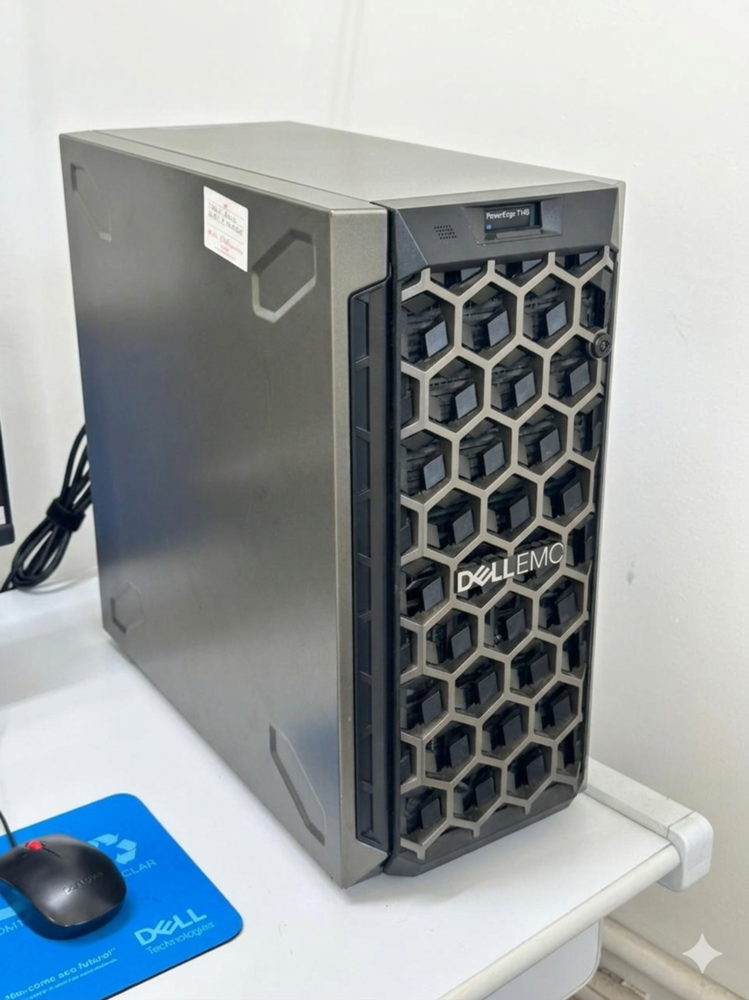
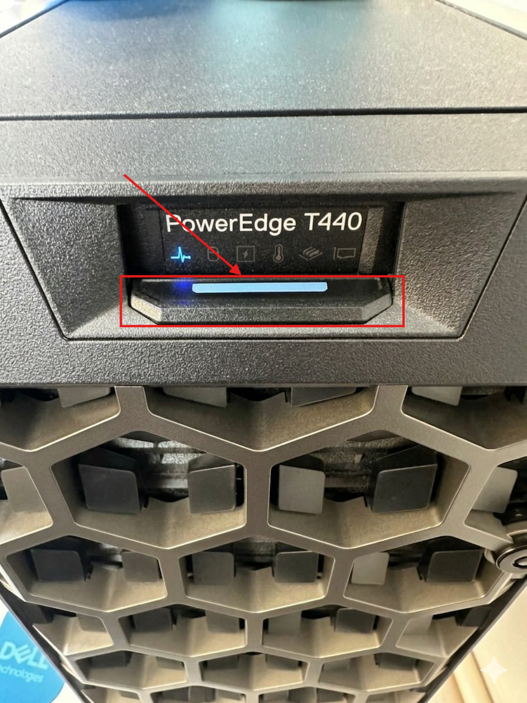

Escolher outro problema ou tutorial
Os computadores dos alunos estão sem internet
Página de solução — Internet e rede
Como resolver
- Verificar se o problema acontece em vários computadores dos alunos ao mesmo tempo.
- Identificar o servidor do laboratório, usando as imagens de referência abaixo.
- Conferir se a luz de energia do servidor está acesa.
- Se a luz de energia não estiver acesa, pressionar o botão indicado na parte frontal do servidor.
- Aguardar de 5 a 10 minutos para o servidor iniciar corretamente e a internet voltar nos computadores dos alunos.
- Depois desse período, testar novamente a internet em um computador de aluno.
Observações
- O servidor é importante para o funcionamento da rede do laboratório.
- Antes de alterar configurações nos computadores dos alunos, confira o estado do servidor.
- Após ligar o servidor, a internet pode demorar de 5 a 10 minutos para voltar.
Ilustração do processo
Use as imagens abaixo como referência visual.

Use esta imagem para identificar o servidor que deve estar ligado.

Confira se a luz de energia está acesa. Se não estiver, pressione o botão indicado.
Quando chamar suporte
Acionar suporte se o servidor estiver ligado e, mesmo assim, vários computadores continuarem sem internet, ou se o servidor não ligar após pressionar o botão de energia.
Dica: se o problema continuar, anote o equipamento, a sala, o horário e tire uma foto da mensagem exibida na tela.